It’s important to realize that in the preceding example, we assume steady-state conditions, where the soldering iron has been held in place for a long time. Also, the assumption that only 10 W were transferred is an important point, since there is a lot of heat being radiated off as heat to the air and the iron handle, and so on. In any case, things can get very hot, even when moderate power levels are in question.
2.8.1 Importance of Heat Production
Heat production has its place in electronics (toasters, hair dryers, water heaters, etc.), but most of the time heat represents power loss that is to be minimized whenever possible, or at least taken into consideration when selecting components. All real circuit components—not just resistors but things like capacitors, transformers, transistors, and motors—contain inherent internal resistances. Though these internal resistances can often be neglected, in some situations they cannot be ignored.
Major problems arise when unintended heat generation increases the temperature of a circuit component to a critical point, causing component failure by explosion, melting, or some other catastrophic event. Less severe problems may surface as a component becomes thermally damaged, resulting in a change in characteristic properties, such as a shift in resistance that may cause undesirable effects in circuit behavior.
To avoid problems associated with heat production, it’s important to use components that are rated to handle two to three or more times the maximum power they are expected to dissipate. In cases where heat presents a shift in component parameter performance, selecting a component with a lower temperature coefficient (TC) will help.
Heat dissipation (more correctly, the efficient removal of generated heat) becomes very important in medium-to high-power circuits—power supplies, amplifier stages, transmitting circuits, and power-hungry circuits with power transistors. There are various techniques to remove heat from a circuit in order to lower the operating temperature of components to below critical levels. Passive methods include heat sinks, careful component layout, and ventilation. Heat sinks are special devices that are used to draw heat away from temperature-sensitive devices by increasing the radiating surface in air—which acts like a cooling fluid for conduction. Active methods include forced air (fans) or some sort of liquid cooling. We’ll discuss these methods throughout the book.
Example:
Figure 2.25 shows a thin-film resistor in an integrated circuit. How hot will it get with 2 W dissipated over its 0.1 × 0.2-in surface (100 W/in2)? Assume the ground plane is at 80°C.
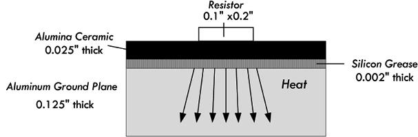
FIGURE 2.25
Answer: Since we have three different media through which this heat will be transferred, we must take into consideration thermal conduction within each. With the help of Eq. 2.14 and Table 2.4, we get the individual heat transfers through each region:
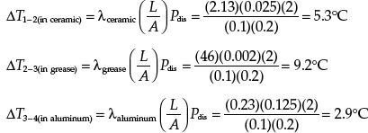
Adding this together:
ΔT1–4 = 5.3°C + 9.2°C + 2.9°C = 17.4°C
Adding this to the 80°C for the aluminum ground plane leads to an estimated 100°C for maximum resistor temperature. This is a conservative estimate, since it neglects transverse heat spreading.
In Sec. 2.5, we saw that the current density within a copper wire increased as the diameter of the wire decreased. As it turns out, a higher current density translates into a hotter wire; there are more collisions occurring between electrons and copper lattice ions. There is a point where the current density can become so large that the vibrating effect can overpower the copper-lattice binding energy, resulting in wire meltdown (also referred to as the fusing point). To prevent this from occurring, it is important to select the appropriate wire size for anticipated current levels. Wire size is expressed in gauge number—the common standard being the American Wire Gauge (AWG)—whereby a smaller gauge number corresponds to a larger-diameter wire (high current capacity). Table 2.5 shows a short list of common AWG wires. Section 3.1, on wires and cables, provides a more in-depth list.
TABLE 2.5 Copper Wire Specifications (Bare and Enamel-Coated Wire)
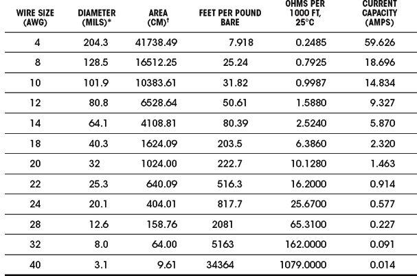
* 1 mil = 0.001 in or 0.0254 mm.
† A circular mil (CM) is a unit of area equal to that of a 1-mil-diameter circle. The CM area of a wire is the square of the mil diameter.
Diameters of wires in Fig. 2.26 are relative and not to scale.
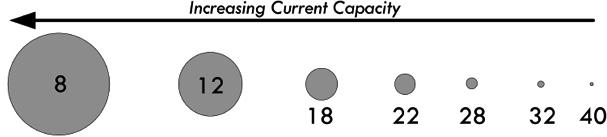
FIGURE 2.26
Example: A load device that is known to vary in output power from 0.1 mW to 5 W is to be connected to a 12-V source that is 10 ft away from the load. Determine the minimum wire gauge, provided by Table 2.5, that can safely support any anticipated current drawn by the load.
Answer: We only care about the maximum power level, so using the generalized power law:
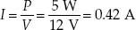
Given only the selection of wire gauges provided by Table 2.5, a 22-gauge wire with a 0.914-A rating would work, though we could be conservative and select an 18-gauge wire with a 2.32-A rating. Since the length is so short, there is no appreciable drop in voltage through the wire, so we can ignore the length.
Example: A 10-Ω heating device is powered by a 120-VAC source. How much current does it draw, and what size conductors should be used to connect to the device?
Answer: 120 VAC is an RMS value of a sinusoidal voltage—in this case, household line voltage. Though we’ll discuss this later when we cover ac, it can be treated like a dc voltage in terms of power dissipated through a resistor. So,
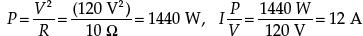
A 10-gauge wire would support this kind of current, though a larger 8-gauge wire would be safer.
Example: Why shouldn’t you connect a wire across a voltage source? For example, if you connect a 12-gauge wire directly across a 120-V source (120-V mains outlet), what do you think will happen? What will happen when you do this to a 12-V dc supply, or to a 1.5-V battery?
Answer: In the 120-V mains case, you will likely cause a huge spark, possibly melting the wire and perhaps in the process receiving a nasty shock (if the wire isn’t insulated). But more likely, your circuit breaker in the home will trip, since the wire will draw a huge current due to its low resistance—breakers trip when they sense a large level of current flowing into one of their runs. Some are rated at 10 A, others at 15 A, depending on setup. In a good dc supply, you will probably trip an internal breaker or blow a fuse, or in a bad supply, ruin the inner circuitry. In the case of a battery, there is internal resistance in the battery, which will result in heating of the battery. There will be less severe levels of current due to the internal resistance of the battery, but the battery will soon drain, possibly even destroying the battery, or in an extreme case causing the battery to rupture.
2.10 Grounds
As we left off in Sec. 2.3, we saw that understanding voltage is a relativity game. For example, to say that a point in a circuit has a voltage of 10 V is meaningless unless you have another point in the circuit with which to compare it. Often you define a point in the circuit to be a kind of 0-V reference point on which to base all other voltage measurements. This point is often called the ground, and is frequently represented by the symbol shown in Fig. 2.27:
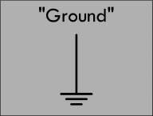
FIGURE 2.27
For example, Fig. 2.28 shows various ways in which to define voltages by selecting a ground—which in this case is simply a 0-V reference marker. The single battery provides a 1.5-V potential difference or voltage between its terminals. We can simply place a 0-V reference ground at the negative terminal and then state that the positive terminal sits at 1.5 V relative to the 0-V reference ground. The 0-V reference, or the negative terminal of the battery, is called the return. If a load, such as a lamp or resistor, is placed between the terminals, a load current will return to the negative terminal.
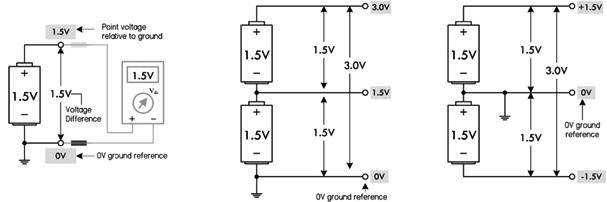
FIGURE 2.28
In the center diagram in Fig. 2.28, we have two 1.5-V batteries placed end to end. When batteries are linked this way, their voltages add, creating a combined total voltage of 3.0 V. With the 0-V reference ground at the bottom, we get 1.5-V and 3.0-V readings at the locations shown in the figure. A load placed across the two batteries (3.0-V difference) will result in a load current that returns to the lower battery’s negative terminal. In this case, the return is through the 0-V reference—the lower battery’s negative terminal.
Finally, it is possible to create a split supply by simply repositioning the 0-V ground reference, placing it between the batteries. This creates +1.5 V and −1.5 V leads relative to the 0-V reference. Many circuits require both positive and negative voltage relative to a 0-V ground reference. In this case, the 0-V ground reference acts as a common return. This is often necessary—say, in an audio circuit—where signals are sinusoidal and alternate between positive and negative voltage relative to a 0-V reference.
Now, the ground symbol shown in Fig. 2.27 as a 0-V reference, or as a return, is used all the time by various people. As it turns out, however, it really is supposed to represent a true earth ground—a physical connection to the earth through a conductive material buried in the earth. For whatever reasons, the symbol’s dual meaning has survived, and this can often be a source of confusion to beginners.
2.10.1 Earth Ground
The correct definition of an earth ground is usually a connection terminated at a rod driven into the earth to a depth of 8 ft or more. This earth ground rod is wired directly to a mains breaker box’s ground bar and sent to the various ac outlets in one’s home via a green-coated or bare copper wire that is housed within the same mains cable as hot and neutral wires. The ground can then be accessed at the outlet at the ground socket. Metal piping buried in the earth is often considered an earth ground. See Fig. 2.29.
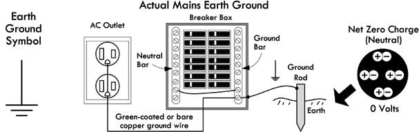
FIGURE 2.29 Earth ground.
A physical link to the earth is important because the earth provides an electrically neutral body; equal numbers of positive and negative charges are distributed through its entirety. Due to the earth’s practically infinite charge neutrality, attempts at changing the earth potential, via electrical generators, batteries, static electrical mechanisms, or the like, will have essentially no measurable effect. Any introduction of new charge into the earth is quickly absorbed (the earth’s moist soil is usually rather conductive). Such charge interactions occur constantly throughout the planet, and the exchanges average out to zero net charge.
For practical purposes, then, the earth is defined to be at a zero potential (relative to other things)—a potential that is practically immune to wavering. This makes the earth a convenient and useful potential on which to reference other signals. By connecting various pieces of electronics equipment to the earth ground, they can all share the earth’s ground reference potential, and thus all devices share a common reference.
The actual physical connection to earth ground at a particular piece of equipment is usually through the power cord’s ground wire that links to the mains ground wire network when the device is plugged in. The ground wire from the power cord is typically connected internally to the equipment chassis (frame) and, more important for our discussion, to the return portion of a channel that emanates from the interior circuitry. This is then brought out as a ground lead terminal. For example, in Fig. 2.30, an oscilloscope, function generator, and generic audiovisual device use BNC and UHF connectors for input and output channels. Internally, the outer connector body of the BNC or UHF jack is wired to the return (or source) portion of the channel, while a central conductor wire (insulated from the outer body) is wired to the source (or return) portion of the channel. The important part, now, is that the return, or outer, connector is also internally wired to the mains ground wire through the power cord cable. This sets the return to an earth ground reference. In the case of the dc power supply, a separate earth ground terminal is presented at the face in the form of a banana jack terminal. In order to ground the dc supply, a jumper wire must be connected between the negative supply terminal and the ground terminal. If no jumper is used, the supply is said to be floating.
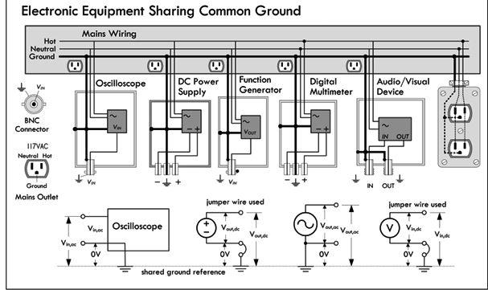
FIGURE 2.30 Illustration showing how various test instruments and an audiovisual device share a common ground connection through the mains ground wiring.
All the grounded pieces of equipment share a common ground. To prove this to yourself, try measuring the resistance between the ground terminals of any two separate pieces of test equipment in your lab. If the devices are properly grounded, you will get a measurement of 0 Ω (but a bit more for internal resistances).
Besides acting simply as a reference point, grounding reduces the possibility of electrical shock if something within a piece of equipment should fail and the chassis or cabinet becomes “hot.” If the chassis is connected to a properly grounded outlet via a three-wire electrical system ground, the path of current flow from the hot chassis will be toward ground, not through your body (which is a more resistive path). A ground system to prevent shock is generally referred to as a dc ground. We’ll discuss shock hazards and grounding later, when we cover ac.
Grounding also helps eliminate electrostatic discharge (ESD) when a statically charged body comes in contact with sensitive equipment. The charged body could be you, after a stroll you took across the carpet. Some ICs are highly vulnerable to damage from ESD. By providing a grounded work mat or using a grounded wrist strap while working with sensitive ICs, you can avoid destroying your chips by ensuring that charge is drained from your body before you touch anything.
Another big job the ground system does is provide a low-impedance path to ground for any stray RF current caused by stray radiofrequency-producing devices, such as electrical equipment, radio waves, and so on. Stray RF can cause equipment to malfunction and contributes to RFI problems. This low-impedance path is usually called RF ground. In most cases, the dc ground and the RF ground are provided by the same system.
Common Grounding Error
As previously mentioned, the ground symbol, in many cases, has been used as a generic symbol in circuit diagrams to represent the current return path, even though no physical earth ground is used. This can be confusing for beginners when they approach a three-terminal dc power supply that has a positive (+), negative (-), and ground terminal. As we have learned, the ground terminal of the supply is tied to the case of the instrument, which in turn is wired to the mains earth ground system. A common mistake for a novice to make is to attempt to power a load, such as a lamp, using the positive and ground terminals of the supply, as shown in Fig. 2.31a. This, however, doesn’t complete a current return path to the energy source (supply), so no current will flow from the source; hence, the load current will be zero. The correct procedure, of course, is to either connect the load between the positive and negative terminals directly, thus creating a floating load, or, using a jumper wire between the ground and negative supply, create a grounded load. Obviously, many dc circuits don’t need to be grounded—it will generally neither help nor hinder performance (e.g., battery-powered devices need no such connection).
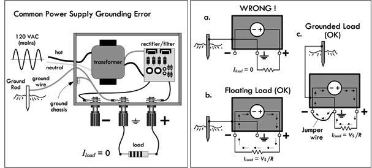
FIGURE 2.31
Circuits that require both positive and negative voltage require a power supply to provide each polarity. The supply for the positive voltage will have the negative terminal as a return, and the negative supply will have the positive terminal as the return. These two terminals are connected together, forming a common return path for load current, as shown in Fig. 2.32. The connection between the negative and the positive terminals of the supplies results in a common or floating return. The floating common may be connected to the earth ground terminal of a supply, if a particular circuit requests this. Generally, it will neither help nor hinder circuit performance.
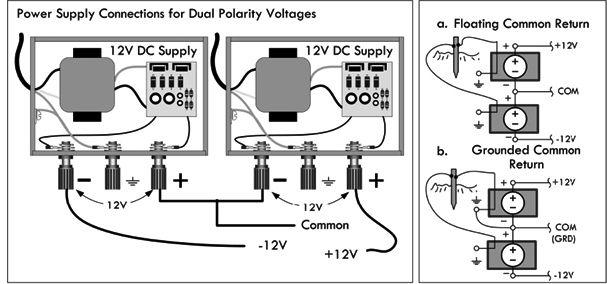
FIGURE 2.32
Unfortunately, the earth ground symbol is used a bit too loosely in electronics, often meaning different things to different people. It is used as a 0-V reference, even though no actual connection is made to Earth. Sometimes it actually means to connect a point in a circuit to earth ground. Sometimes it is used as a generic return—to eliminate the need to draw a return wire. It could be used as an actual earth ground return (using the mains ground copper wire), though this is unwise. See Fig. 2.33. To avoid complications, alternative symbols are used, which we discuss next.
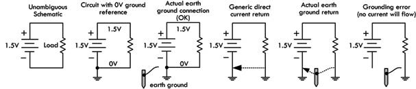
FIGURE 2.33
2.10.2 Different Types of Ground Symbols
To avoid misinterpretations regarding earth grounding, voltage references, and current return paths, less ambiguous symbols have been adopted. Figure 2.34 shows an earth ground (could be Earth or reference), a frame or chassis ground, and a digital and analog reference ground. Unfortunately, the common return for digital and analog is a bit ambiguous, too, but usually a circuit diagram will specify what the symbol is referring to.
FIGURE 2.34
Table 2.6 provides a rundown on meanings behind these symbols.
TABLE 2.6 Types of Ground Symbols
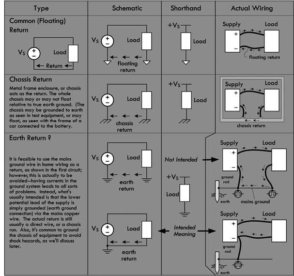
2.10.3 Loose Ends on Grounding
There are a few loose ends on grounding that need mentioning. They are discussed here, with reference to Fig. 2.35.
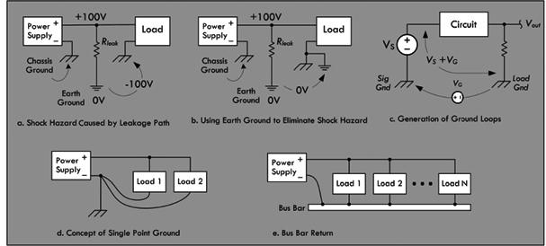
FIGURE 2.35
Shock Hazard
In instances where high voltages are required and chassis grounds or metal frames are used as return paths, shock hazardous conditions can be created if the earth grounds are neglected. For example, in Fig. 2.35a when a load circuit uses a metal enclosure as a chassis ground, resistive leakage paths (unwanted resistive paths) can exist, which result in high voltages between the enclosure and earth ground. If, inadvertently, an earth-grounded object, such as a grounded metal pipe, and the circuit chassis are simultaneously touched, a serious shock will result. To avoid this situation, the chassis is simply wired to an earth ground connection, as shown in Fig. 2.35b. This places the metal pipe and the enclosure at the same potential, eliminating the shock hazard. Similar hazardous conditions can develop in household appliances. Electrical codes require that appliance frames, such as washers and dryers, be connected to earth ground.
Grounding and Noise
The most common cause of noise in large-scale electronic systems is lack of good grounding practices. Grounding is a major issue for practicing design and system engineers. Though it is not within the scope of this book to get into the gory details, we’ll mention some basic practices to avoid grounding problems in your circuits.
If several points are used for ground connections, differences in potential between points caused by inherent impedance in the ground line can cause troublesome ground loops, which will cause errors in voltage readings. This is illustrated in Fig. 2.35c, where two separated chassis grounds are used. VG represents a voltage existing between signal ground and the load ground. If voltage measurements are made between the load ground and the input signal, VS, an erroneous voltage, (VS + VG) is measured. A way to circumvent this problem is to use a single-point ground, as shown in Fig. 2.35d.
The single-point ground concept ensures that no ground loops are created. As the name implies, all circuit grounds are returned to a common point. While this approach looks good on paper, it is usually not practical to implement. Even the simplest circuits can have 10 or more grounds. Connecting all of them to a single point becomes a nightmare. An alternative is to use a ground bus.
A ground bus, or bus bar found in breadboards and prototype boards, or which can be etched in a custom printed circuit board (PCB), serves as an adequate substitute for a single-point ground. A bus bar is simply a heavy copper wire or bar of low resistance that can carry the sum total of all load currents back to the power supply. This bus can be extended along the length of the circuitry so that convenient connections can be made to various components spaced about the board. Figure 2.35e shows a bus bar return. Most prototype boards come with two or three lines of connected terminals extending along the length of the board. One of these continuous strips should be dedicated as a circuit ground bus. All circuit grounds should be tied directly to this bus. Care must be taken to make sure that all lead and wire connections to the bus are secure. For prototype boards, this means a good solder joint; for wire-wrap board, a tight wire wrap; for breadboard, proper gauge wire leads to securely fit within sockets. Bad connections lead to intermittent contact that leads to noise.
Analog and Digital Grounds
Devices that combine analog and digital circuitry should, in general, have their analog and digital grounds kept separate, and eventually connected together at one single point. This is to prevent noise from being generated within the circuits due to a ground current. Digital circuits are notorious for generating spikes of current when signals change state. Analog circuits can generate current spikes when load currents change or during slewing. In either case, the changing currents are impressed across the ground-return impedance, causing voltage variations (use Ohm’s law) at the local ground plane with respect to the system reference ground, often located near the power supply. The ground return impedance consists of resistive, capacitive, and inductive elements, though resistance and inductance are predominant. If a constant current is impressed across the ground return, resistance is primary, and a dc offset voltage will exist. If the current is alternating, resistance, inductance, and capacitance all play a role, and a resulting high-frequency ac voltage will exist. In either case, these voltage variations get injected into the local circuits and are considered noise—capable of screwing up sensitive signal levels used within the local circuits. There are a number of tricks to reduce noise (such as adding capacitors to counterbalance the inductance), but a good trick is to keep the digital and analog ground separated, then attach them together at one single point.
Example: What do the following symbols represent?
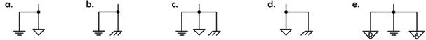
FIGURE 2.36
Answer: (a) Probably an analog circuit ground that is terminated at the supply to an actual earth ground connection. (b) A chassis ground that is connected to earth ground, probably to prevent shock hazards. (c) Appears like an analog ground return that is linked to both the chassis and the earth ground. (d) A floating chassis that is connected to circuit return ground—a potential shock hazard. (e) Separate analog and digital grounds that are linked to a common ground point near the supply, which in turn is grounded to earth.
2.11 Electric Circuits
Though we have already shown circuits, let’s define circuits in basic terms. An electric circuit is any arrangement of resistors, wires, or other electrical components (capacitors, inductors, transistors, lamps, motors, etc.) connected together that has some level of current flowing through it. Typically, a circuit consists of a voltage source and a number of components connected together by means of wires or other conductive means. Electric circuits can be categorized as series circuits, parallel circuits, or a combination of series and parallel parts. See Fig. 2.37.
Basic Circuit
A simple lightbulb acts as a load (the part of the circuit on which work must be done to move current through it). Attaching the bulb to the battery’s terminals, as shown, will initiate current flow from the positive terminal to the negative terminal. In the process, the current will power the filament of the bulb, and light will be emitted. (Remember that the term current here refers to conventional current—electrons are actually flowing in the opposite direction.)
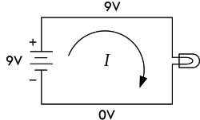
Series Circuit
Connecting load elements (lightbulbs) one after the other forms a series circuit. The current through all loads in series will be the same. In this series circuit, the voltage drops by a third each time current passes through one of the bulbs (all bulbs are exactly the same). With the same battery used in the basic circuit, each light will be one-third as bright as the bulb in the basic circuit. The effective resistance of this combination will be three times that of a single resistive element (one bulb).
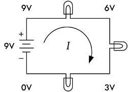
Parallel Circuit
A parallel circuit contains load elements that have their leads attached in such a way that the voltage across each element is the same. If all three bulbs have the same resistance values, current from the battery will be divided equally into each of the three branches. In this arrangement, light-bulbs will not have the dimming effect, as was seen in the series circuit, but three times the amount of current will flow from the battery, hence draining it three times as fast. The effective resistance of this combination will be one-third that of a single resistive element (one bulb).
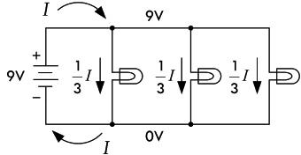
Combination of Series and Parallel
A circuit with load elements placed both in series and in parallel will have the effects of both lowering the voltage and dividing the current. The effective resistance of this combination will be three-halves that of a single resistive element (one bulb).
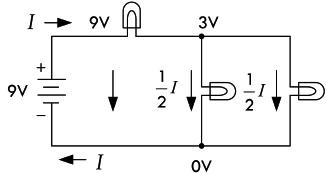
FIGURE 2.37
Circuit Analysis
Following are some important laws, theorems, and techniques used to help predict what the voltage and currents will be within a purely resistive circuit powered by a direct current (dc) source, such as a battery.
2.12 Ohm’s Law and Resistors
Resistors are devices used in circuits to limit current flow or to set voltage levels within circuits. Figure 2.38 shows the schematic symbol for a resistor; two different forms are commonly used. Schematic symbols for variable resistors—resistors that have a manually adjustable resistance, as well as a model of a real-life resistor, are also shown. (The real-life model becomes important later on when we deal with high-frequency ac applications. For now, ignore the model.)
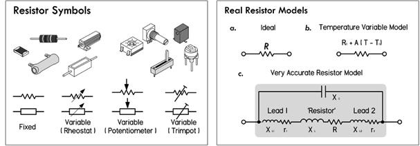
FIGURE 2.38
If a dc voltage is applied across a resistor, the amount of current that will flow through the resistor can be found using Ohm’s law. To find the power dissipated as heat by the resistor, the generalized power (with Ohm’s law substitution) can be used.
V = I × R
(2.15) Ohm’s law
P = IV = V2/R = I2R
(2.16) Ohm’s power law
R is the resistance or the resistor expressed in ohms (Ω), P is the power loss in watts (W), V is the voltage in volts (V), and I is the current in amperes (A).
Resistors typically come with resistance values from 1 Ω to 10,000,000 Ω. Most of the time, the resistance is large enough to adopt a unit prefix convention to simplify the bookkeeping. For example, a 100,000-Ω resistance can be simplified by writing 100 kΩ (or simply 100k, for short). Here k = ×1000. A 2,000,000-Ω resistance can be shortened to 2 MΩ (or 2M, for short). Here M = ×1,000,000.
Conversely, voltages, currents, and power levels are usually small fractions of a unit, in which case it is often easier to use unit prefixes such as m (milli or ×10−3), μ (micro or × 10−6), n (nano or ×10−9), or even p (pico or ×10−12). For example, a current of 0.0000594 A (5.94 × 10−5 A) can be written in unit prefix form as 59.4 μA. A voltage of 0.0035 (3.5 × 10−3 V) can be written in unit prefix form as 3.5 mV. A power of 0.166 W can be written in unit prefix form as 166 mW.
Example: In Fig. 2.39, a 100-Ω resistor is placed across a 12-V battery. How much current flows through the resistor? How much power does the resistor dissipate?
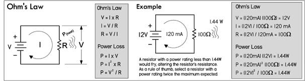
FIGURE 2.39
2.12.1 Resistor Power Ratings
Determining how much power a resistor dissipates is very important when designing circuits. All real resistors have maximum allowable power ratings that must not be exceeded. If you exceed the power rating, you’ll probably end up frying your resistor, destroying the internal structure, and thus altering the resistance. Typical general-purpose resistors come in -, ¼-, ½-, and 1-W power ratings, while high-power resistors can range from 2 to several hundred watts.
-, ¼-, ½-, and 1-W power ratings, while high-power resistors can range from 2 to several hundred watts.
So, in the preceding example, where our resistor was dissipating 1.44 W, we should have made sure that our resistor’s power rating exceeded 1.44 W; otherwise, there could be smoke. As a rule of thumb, always select a resistor that has a power rating at least twice the maximum value anticipated. Though a 2-W resistor would work in our example, a 3-W resistor would be safer.
To illustrate how important power ratings are, we examine the circuit shown in Fig. 2.40. The resistance is variable, while the supply voltage is fixed at 5 V. As the resistance increases, the current decreases, and according to the power law, the power decreases, as shown in the graphs. As the resistance decreases, the current and power increase. The far right graph shows that as you decrease the resistance, the power rating of the resistor must increase; otherwise, you’ll burn up the resistor.
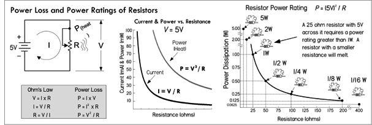
FIGURE 2.40
Example 1: Using an ammeter, you measure a current of 1.0 mA through a 4.7-kΩ resistor. What voltage must exist across the resistor? How much power does the resistor dissipate?
Answer:
V = IR = (0.001 A)(4700 Ω) = 4.7 V; P = I2 × R = (0.001 A)2 × (4700 Ω) = 0.0047 W = 4.7 mW
Example 2: Using a voltmeter, you measure 24 V across an unmarked resistor. With an ammeter, you measure a current of 50 mA. Determine the resistance and power dissipated in the resistor.
Answer:
R = V/I = (24 V)/(0.05 A) = 480 Ω; P = I × V = (0.05 A) × (24 V) = 1.2 W
Example 3: You apply 3 V to a 1-MΩ resistor. Find the current through the resistor and the power dissipated in the process.
Answer:
I = V/R = (3 V)/(1,000,000 Ω) = 0.000003 A = 3 μA; P = V2/R = (3 V)2/(1,000,000 Ω) = 0.000009 W = 9 μW
Example 4: You are given 2-Ω, 100-Ω, 3-kΩ, 68-kΩ, and 1-MΩ resistors, all with 1-W power ratings. What’s the maximum voltage that can be applied across each of them without exceeding their power ratings?
Answer:
P = V2/R ⇒ V = 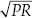; voltages must not exceed 1.4 V (2 Ω), 10.0 V (100 Ω), 54.7 V (3 kΩ), 260.7 V (68 kΩ), 1000 V (1 MΩ)
2.12.2 Resistors in Parallel
Rarely do you see circuits that use a single resistor alone. Usually, resistors are found connected in a variety of ways. The two fundamental ways of connecting resistors are in series and in parallel.
When two or more resistors are placed in parallel, the voltage across each resistor is the same, but the current through each resistor will vary with resistance. Also, the total resistance of the combination will be lower than that of the lowest resistance value present. The formula for finding the total resistance of resistors in parallel is:
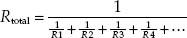
(2.17)
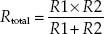
(2.18) Two resistors in parallel
The dots in the equation indicate that any number of resistors can be combined. For only two resistances in parallel (a very common case), the formula reduces to Eq. 2.18.
(You can derive the resistor-in-parallel formula by noting that the sum of the individual branch currents is equal to the total current: Itotal = I1 + I2 + I3 + … IN. This is referred to as Kirchhoff’s current law. Then, applying Ohm’s law, we get: Itotal = V1/R1 + V2/R2 + V3/R3 + … VN/RN. Because all resistor voltages are equal to Vtotal since they share the same voltage across them, we get: Itotal = Vtotal/R1 + Vtotal/R2 + Vtotal/R3 + … Vtotal/RN. Factoring out Vtotal, we get: Itotal = Vtotal (1/R1 + 1/R2 + 1/R3 … 1/R4). We call the term in brackets Rtotal.
Note that there is a shorthand for saying that two resistors are in parallel. The shorthand is to use double bars | | to indicate resistors in parallel. So to say R1 is in parallel with R2, you would write R1 | | R2. Thus, you can express two resistors in parallel in the following ways:
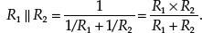
In terms of arithmetic order of operation, the | | can be treated similar to multiplication or division. For example, in the equation Zin = R1 + R2 | | Rload, you calculate R2 and Rload in parallel first, and then you add R1.
Example 1: If a 1000-Ω resistor is connected in parallel with a 3000-Ω resistor, what is the total or equivalent resistance? Also calculate total current and individual currents, as well as the total and individual dissipated powers.
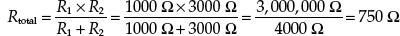
To find how much current flows through each resistor, apply Ohm’s law:
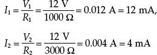
These individual currents add up to the total input current:
This statement is referred to as Kirchhoff’s current law. With this law, and Ohm’s law, you come up with the current divider equations, shown at the bottom of Fig. 2.41. These equations come in handy when you know the input current but not the input voltage.
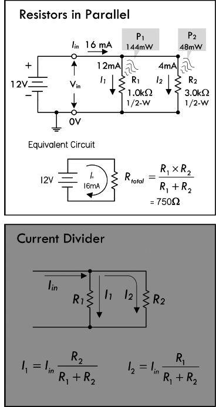
FIGURE 2.41
We could have just as easily found the total current using:
Iin = Vin/Rtotal = (12 V)/(750 Ω) = 0.016 A = 16 mA
To find how much power resistors in parallel dissipate, apply the power law:
Ptot = IinVin = (0.0016 A)(12 V) = 0.192 W = 192 mW
P1 = I1Vin = (0.012 A)(12 V) = 0.144 W = 144 mW
P2 = I2Vin = (0.004 A)(12 V) = 0.048 W = 48 mW
Example 2: Three resistors R1 = 1 kΩ, R2 = 2 kΩ, R3 = 4 kΩ are in parallel. Find the equivalent resistance. Also, if a 24-V battery is attached to the parallel circuit to complete a circuit, find the total current, individual currents through each of the resistors, total power loss, and individual resistor power losses.
The total resistance for resistors in parallel:
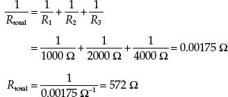
The current through each of the resistors:
I1 = V1/R1 = 24 V/1000 Ω = 0.024 A = 24 mA
I2 = V2/R2 = 24 V/2000 Ω = 0.012 A = 12 mA
I3 = V3/R3 = 24 V/4000 Ω = 0.006 A = 6 mA
The total current, according to Kirchhoff’s current law:
Itotal = I1 + I2 + I3 = 24 mA + 12 mA + 6 mA = 42 mA
The total power dissipated by the parallel resistors:
Ptotal = Itotal × Vtotal = 0.042 A × 24 V = 1.0 W
The power dissipated by individual resistors is shown in Fig. 2.42.
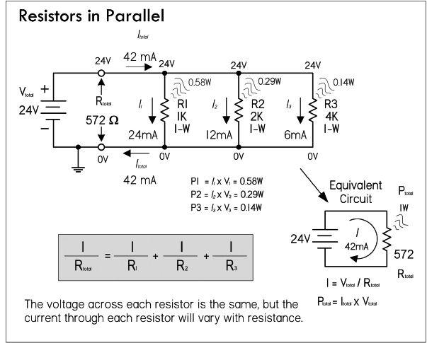
FIGURE 2.42
2.12.3 Resistors in Series
When a circuit has a number of resistors connected in series, the total resistance of the circuit is the sum of the individual resistances. Also, the amount of current flowing through each resistor in series is the same, while the voltage across each resistor varies with resistance. The formula for finding the total resistance of resistors in series is:
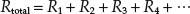
(2.19)
The dots indicate that as many resistors as necessary may be added.
You can derive this formula by noting that the sum of all the voltage drops across each series resistor will equal the applied voltage across the combination Vtotal = V1 + V2 + V3 + … + VN. This is referred to as Kirchhoff’s voltage law. Applying Ohm’s law, and noting that the same current I flows through each resistor, we get: IRtotal = IR1 + IR2 + IR3 + … + IRN. Canceling the I’s you get: Rtotal = R1 + R2 + R3 + R4 + …)
Example 1: If a 1.0-kΩ resistor is placed in series with a 2.0-kΩ resistor, the total resistance becomes:
Rtot = R1 + R2 = 1000 Ω + 2000 Ω = 3000 Ω = 3 kΩ
When these series resistors are placed in series with a battery, as shown in Fig. 2.43, the total current flow I is simply equal to the applied voltage Vin, divided by the total resistance:
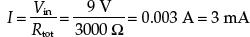
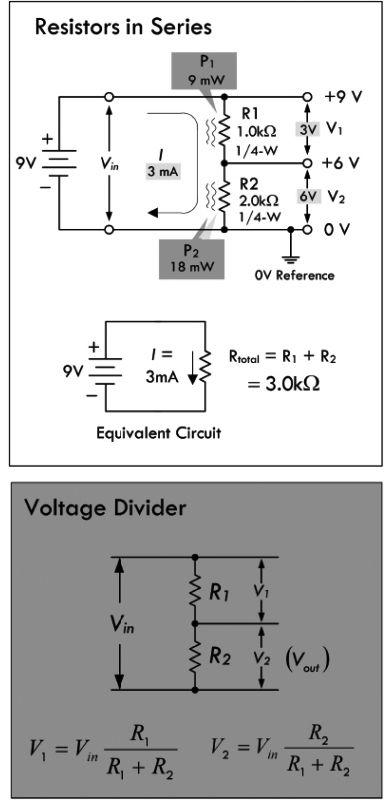
FIGURE 2.43
Since the circuit is a series circuit, the currents through each resistor are equal to the total current I:
I1 = 3 mA, I2 = 3 mA
To find the voltage drop across each resistor, apply Ohm’s law:
V1 = I1 × R1 = 0.003 A × 1000 Ω = 3 V
V2 = I2 × R2 = 0.003 A × 2000 Ω = 6 V
Now, we didn’t really have to calculate the current. We could have just plugged I = Vin/Rtot into I1 and I2 in the preceding equations and got:
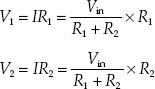
(Voltage divider equations)
These equations are called voltage divider equations and are so useful in electronics that it is worth memorizing them. (See Fig. 2.43.) Often V2 is called the output voltage Vout.
The voltage drop across each resistor is directly proportional to the resistance. The voltage drop across the 2000-Ω resistor is twice as large as that of 1000-Ω resistor. Adding both voltage drops together gives you the applied voltage of 9 V:
Vin = V1 + V2 9 V = 3 V + 6 V
The total power loss and individual resistor power losses are:
Ptot = IVin = (0.003 A)(9 V) = 0.027 W = 27 mW
(Ptot = I2Rtot = (0.003 A)2(3000 Ω) = 0.027 W = 27 mW)
P1 = I2R1 = (0.003 A)2(1000 Ω) = 0.009 W = 9 mW
P2 = I2R2 = (0.003 A)2(2000 Ω) = 0.018 W = 18 mW
The larger resistor dissipates twice as much power.
Example 2: The input of an IC requires a constant 5 V, but the supply voltage is 9 V. Use the voltage divider equations to create a voltage divider with an output of 5 V. Assume the IC has such a high input resistance (10 MΩ) that it practically draws no current from the divider.
Answer: Since we assume the IC draws no current, we can apply the voltage divider directly:
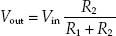
We must choose voltage divider resistors, making sure our choice doesn’t draw too much current, causing unnecessary power loss. To keep things simple for now, let’s choose R2 to be 10 kΩ. Rearranging the voltage divider and solving for R1:
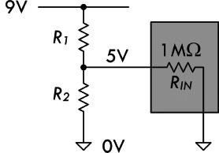
FIGURE 2.44
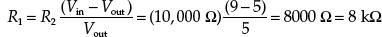
Example 3: You have a 10-V supply, but a device that is to be connected to the supply is rated at 3 V and draws 9.1 mA. Create a voltage divider for the load device.
Answer: In this case, the load draws current and can be considered a resistor in parallel with R2. Therefore, using the voltage divider relation without taking the load into consideration will not work. We must apply what is called the 10 percent rule.
The 10 Percent Rule: This rule is a standard method for selecting R1 and R2 that takes into account the load and minimizes unnecessary power losses in the divider.
The first thing you do is select R2 so that I2 is 10 percent of the desired load current. This resistance and current are called the bleeder resistance and bleeder current. The bleeder current in our example is:
Ibleed = I2 = (0.10)(9.1 mA) = 0.91 mA
Using Ohm’s law, next we calculate the bleeder resistance:
Rbleed = R2 = 3 V/0.00091 A = 3297 Ω
Considering resistor tolerances and standard resistance values, we select a resistor in close vicinity—3300 Ω.
Next, we need to select R1, so that the output is maintained at 3 V.
To do this, simply calculate the total current through the resistor and use Ohm’s law:
I1 = I2 + Iload = 0.91 mA + 9.1 mA = 10.0 mA = 0.01 A
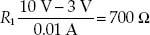
In terms of power ratings:
P1 = V12/R1 = (7 V)2/(700 Ω) = 0.07 W = 70 mW
PR2 = V22/R2 = (3 V)2/(3300 Ω) = 0.003 W = 3 mW
Low-power ¼-W resistors will suffice.
In actual practice, the computed value of the bleeder resistor does not always come out to an even value. Since the rule of thumb for bleeder current is only an estimated value, the bleeder resistor can be of a value close to the computed value. (If the computed value of the resistance were a 500 Ω, 510 Ω resistor could be used.) Once the actual value of the bleeder resistor is selected, the bleeder current must be recomputed. The voltage developed by the bleeder resistor must be equal to the voltage requirement of the load in parallel with the bleeder resistor. We’ll discuss voltage dividers, as well as more complex divider arrangements, in the section on resistors in Chap. 3.
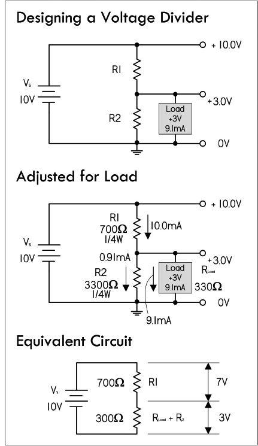
FIGURE 2.45
Example: Find the equivalent resistance of series resistors R1 = 3.3k, R2 = 4.7k, R3 = 10k. If a 24-V battery is attached to the series resistors to complete a circuit, find the total current flow, the individual voltage drops across the resistors, the total power loss, and the individual power loss of each resistor.
The equivalent resistance of the three resistors:
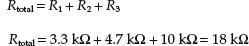
The total current flow through the resistors is:
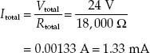
Using Ohm’s law, the voltage drops across the resistors are:
V1 = Itotal × R1 = 1.33 mA × 3.3 kΩ = 4.39 V
V2 = Itotal × R2 = 1.33 mA × 4.7 kΩ = 6.25 V
V3 = Itotal × R3 = 1.33 mA × 10 kΩ = 13.30 V
The total power dissipated is:
Ptotal = Itotal × Vtotal = 1.33 mA × 24 V = 32 mW
Power dissipated by individual resistors is shown in Fig. 2.46.
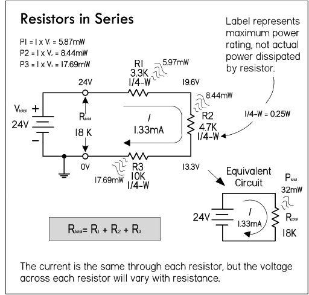
FIGURE 2.46
2.12.4 Reducing a Complex Resistor Network
To find the equivalent resistance for a complex network of resistors, the network is broken down into series and parallel combinations. A single equivalent resistance for these combinations is then found, and a new and simpler network is formed. This new network is then broken down and simplified. The process continues over and over again until a single equivalent resistance is found. Here’s an example of how reduction works.
Example 1: Find the equivalent resistance of the network attached to the battery by using circuit reduction. Afterward, find the total current flow supplied by the battery to the network, the voltage drops across all resistors, and the individual current through each resistor.
R2 and R3 form a parallel branch that can be reduced to:
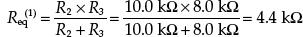
This equivalent resistance and R1 are in series, so their combined resistance is:
Req(2) = R1 + Req(1) = 5.0 kΩ + 4.4 kΩ = 9.4 kΩ
The total current flow through the circuit and through R1 is:
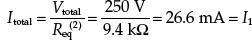
The voltage across R2 and R3 is the same as that across Req(1):
The current through R2 and R3 are found using Ohm’s law:
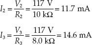
The voltage across R1 is, by Kirchhoff’s voltage law:
V1 = 250 V – 117 V = 133 V
Alternatively we could have used Ohm’s law:
V1 = I1 × R1 = (26.6 mA)(5.0 kΩ) = 133 V
Example 2: Find the equivalent resistance of the following network, along with the total current flow, the individual current flows, and individual voltage drops across the resistors.
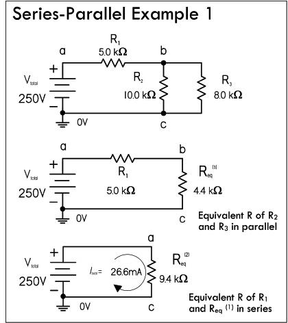
FIGURE 2.47
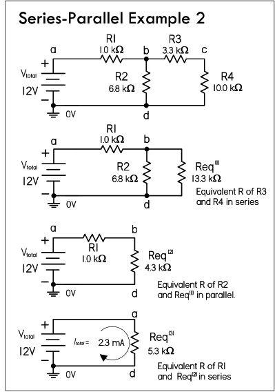
FIGURE 2.48
R3 and R4 can be reduced to resistors in series:
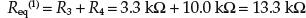
This equivalent resistance is in parallel with R2:
This new equivalent resistance is in series with R1:
The total current flow is:
The voltage across Req(2) or point voltage at b is:
The voltage across R1 is:
You can confirm this using Kirchhoff’s voltage law:
12 V – 9.7 V = 2.3 V
The current through R2:
The current through Req(1), also through R3 and R4:
You can confirm this using Kirchhoff’s current law:
2.26 mA – 1.43 mA = 0.73 mA.
The voltage across R3:
The voltage across R4:
You can confirm this using Kirchhoff’s voltage law:
9.7 V − 2.4 V = 7.3 V
2.12.5 Multiple Voltage Dividers
Example 1: You wish to create a multiple voltage divider that powers three loads: load 1 (75 V, 30 mA), load 2 (50 V, 10 mA), and load 3 (25 V, 10 mA). Use the 10 percent rule and Fig. 2.49 to construct the voltage divider.
FIGURE 2.49
An important point in determining the resistor when applying the 10 percent rule of thumb is that to calculate the bleeder current, you must take 10 percent of the total load current. The steps are as follows:
Find the bleeder current, which is 10 percent (0.1) of the total current:
IR4 = 0.1 × (10 mA + 10 mA + 30 mA) = 5 mA
To find R4 (bleeder resistor), use Ohm’s law:
R4 = (25 V − 0 V)/(0.005 A) = 5000 Ω
The current through R3 is equal to the current through R4 plus the current through load 3:
IR3 = IR4 + Iload3 = 5 mA + 10 mA = 15 mA
To find R3, use Ohm’s law, using the voltage difference between load 2 and load 3: R3 = (50 V − 25 V)/(0.015 A) = 1667 Ω or 1.68 kΩ, considering tolerances and standard resistance values.
The current through R2 is:
IR2 = IR3 + Iload2 = 15 mA + 10 mA = 25 mA
Using Ohm’s law, R2 = (75 V − 50 V)/(0.025 A) = 1000 Ω
The current through R1 is:
IR1 = IR2 + Iload1 = 25 mA + 30 mA = 55 mA
Using Ohm’s law: R1 = (100 V − 75 V)/(0.055 A) = 455 Ω
To determine resistor power ratings and total power losses in loads use P = IV. See results in Fig. 2.49.
Example 2: In many cases, the load for a voltage divider requires both positive and negative voltages. Positive and negative voltages can be supplied from a single-source voltage by connecting the ground return between two of the divider resistors. The exact point in the circuit at which the ground is placed depends upon the voltages required by the loads.
For example, the voltage divider in Fig. 2.50 is designed to provide the voltage and current to three loads from a given source voltage:
Load 1: +50 V @ 50 mA
Load 2: +25 V @ 10 mA
Load 3: −25 V @ 100 mA
FIGURE 2.50
The values of R4, R2, and R1 are computed exactly as was done in the preceding example. IR4 is the bleeder current and can be calculated as follows:
IR4 = 10% × (Iload1 + Iload2 + Iload3) = 16 mA
Calculating R1:
R4 = 25 V/0.016 A = 1562 Ω
To calculate current through R2, use Kirchhoff’s current law (at point A):
IR3 + Iload2 + Iload1 + IR4 + Iload3 = 0
IR3 + 10 mA + 50 mA − 16 mA − 100 mA = 0
IR3 = 56 mA
Calculating R3: R3 = 25 V/(0.056 A) = 446 Ω.
Calculating IR2: IR2 = IR3 + Iload2 = 56 mA + 10 mA = 66 mA.
Then R2 = 25 V/(0.066 A) = 379 Ω.
Calculating IR1 = IR2 + Iload1 = 66 mA + 50 mA = 116 mA.
Then R1 = 25 V/0.116 A = 216 Ω.
Though voltage dividers are simple to apply, they are not regulated in any way. If a load’s resistance changes, or if there is variation in the supply voltage, all loads will experience a change in voltage. Therefore, voltage dividers should not be applied to circuits where the divider will be weighed down by changes in load. For applications that require steady voltage and that draw considerable current, it is best to use an active device, such as a voltage regulator IC—more on this later.
2.13 Voltage and Current Sources

An ideal voltage source is a two-terminal device that maintains a fixed voltage across its terminals. If a variable load is connected to an ideal voltage source, the source will maintain its terminal voltage regardless of changes in the load resistance. This means that an ideal voltage source will supply as much current as needed to the load in order to keep the terminal voltage fixed (in I = V/R, I changes with R, but V is fixed). Now a fishy thing with an ideal voltage source is that if the resistance goes to zero, the current must go to infinity. Well, in the real world, there is no device that can supply an infinite amount of current. If you placed a real wire between the terminals of an ideal voltage source, the calculated current would be so large it would melt the wire. To avoid this theoretical dilemma, we must define a real voltage source (a battery, plug-in dc power supply, etc.) that can supply only a maximum finite amount of current. A real voltage source resembles an ideal voltage source with a small series internal resistance or source resistance rs, which is a result of the imperfect conducting nature of the source (resistance in battery electrolyte and lead, etc.). This internal resistance tends to reduce the terminal voltage, the magnitude of which depends on its value and the amount of current that is drawn from the source (or the size of the load resistance).
FIGURE 2.51
In Fig. 2.52, when an ideal voltage source is open-circuited (no load connected between its terminals), the terminal voltage (VT) equals the ideal source voltage (VS)—there is no voltage drop across the resistor, since current can’t pass through it due to an incomplete circuit condition.
FIGURE 2.52
However, when a load Rload is attached across the source terminals, Rload and rs are connected in series. The voltage at the terminal can be determined by using the voltage divider relation:
From the equation, you can see that when Rload is very large compared to rs, (1000 times greater or more), the effect of rs is so small that it may be ignored. However, when Rload is small or closer to rs in size, you must take rs into account when doing your calculations and designing circuits. See the graph in Fig. 2.52.
In general, the source resistance for dc power supplies is usually small; however, it can be as high as 600 Ω in some cases. For this reason, it’s important to always adjust the power supply voltage with the load connected. In addition, it is a good idea to recheck the power supply voltage as you add or remove components to or from a circuit.
Another symbol used in electronics pertains to dc current sources—see Fig. 2.52. An ideal current source provides the same amount of source current IS at all times to a load, regardless of load resistance changes. This means that the terminal voltage will change as much as needed as the load resistance changes in order to keep the source current constant.
In the real world, current sources have a large internal shunt (parallel) resistance rs, as shown in Fig. 2.52. This internal resistance, which is usually very large, tends to reduce the terminal current IT, the magnitude of which depends on its value and the amount of current that is drawn from the source (or the size of load resistance).
When the source terminals are open-circuited, IT must obviously be zero. However, when we connect a load resistance Rload across the source terminals, Rload and rs form a parallel resistor circuit. Using the current divider expression, the terminal current becomes:
From this equation, you can see that when Rload is small compared to rs, the dip in current becomes so small it usually can be ignored. However, when Rload is large or closer to rs in size, you must take rs into account when doing your calculations.
A source may be represented either as a current source or a voltage source. In essence, they are duals of each other. To translate between the voltage source and current source representation, the resistance value is kept the same, while the voltage of the source is translated into the current of the source using Ohm’s law. See Fig. 2.53 for details.
FIGURE 2.53
One way to look at an ideal current source is to say it has an internal resistance that is infinite, which enables it to support any kind of externally imposed potential difference across its terminals (e.g., a load’s resistance changes). An approximation to an ideal current source is a voltage source of very high voltage V in series with a very large resistance R. This approximation would supply a current V/R into any load that has a resistance much smaller than R. For example, the simple resistive current source circuit shown in Fig. 2.54 uses a 1-kV voltage source in series with a 1-MΩ resistor. It will maintain the set current of 1 mA to an accuracy within 1 percent over a 0-to 10-V range (0 < Rload < 10 kΩ). The current is practically constant even though the load resistance varies, since the source resistance is much greater than the load resistance, and thus the current remains practically constant. (I = 1000 V/(1,000,000 Ω + 10,0000 Ω. Since 1,000,000 Ω is so big, it overshadows Rload.)
FIGURE 2.54
A practical current source is usually an active circuit made with transistors, as shown in Fig. 2.54c. Vin drives current through R1 into the base of the second transistor, so current flows into the transistor’s collector, through it, and out its emitter. This current must flow through R2. If the current gets too high, the first transistor turns on and robs the second transistor of base current, so its collector current can never exceed the value shown. This is an excellent way of either making a current source or limiting the available current to a defined maximum value.
2.14 Measuring Voltage, Current, and Resistance
Voltmeters, ammeters, and ohmmeters, used to measure voltage, current, and resistance, ideally should never introduce any effects within the circuit under test. In theory, an ideal voltmeter should draw no current as it measures a voltage between two points in a circuit; it has infinite input resistance Rin. Likewise, an ideal ammeter should introduce no voltage drop when it is placed in series within the circuit; it has zero input resistance. An ideal ohmmeter should provide no additional resistance when making a resistance measurement.
Real meters, on the other hand, have limitations that prevent them from making truly accurate measurements. This stems from the fact that the circuit of a meter requires a sample current from the circuit under test in order to make a display measurement. Figure 2.55 shows symbols for an ideal voltmeter, ammeter, and ohmmeter, along with the more accurate real-life equivalent circuits.
FIGURE 2.55
An ideal voltmeter has infinite input resistance and draws no current; a real voltmeter’s input resistance is several hundred MΩs. An ideal ammeter has zero input resistance and provides no voltage drop; a real ammeter’s input resistance is fractions of ohms. An ideal ohmmeter has zero internal resistance; a real ohmmeter’s internal resistance is fractions of ohms. It is important to read your instrument manuals to determine the internal resistances.
The effects of meter internal resistance are shown in Fig. 2.56. In each case, the internal resistance becomes part of the circuit. The percentages of error in measurements due to the internal resistances become more pronounced when the circuit resistances approach the meters’ internal resistance.
FIGURE 2.56
Figure 2.57 shows the actual makeup of a basic analog multimeter. Note that this device is overly simplistic; real meters are much more sophisticated, with provisions for range selection, ac measurements, and so on. At any rate, it shows you that the meters are nonideal due to the sample current required to drive the galvanometer’s needle.
FIGURE 2.57 The heart of this simple analog multimeter is a galvanometer which measures current flow IG. Current sent through the galvanometer’s wire leads will generate a magnetic field from the coil windings in the center rotor. Since the coil is tilted relative to the N-S alignment of the permanent magnet, the rotor will rotate in accordance with the amount of current flow. Normally you get full deflection of the needle at extremely low current levels, so you can add a parallel resistor to divert current flow away from the galvanometer. The galvanometer can also be used as a voltmeter by placing its lead at the point voltages within the circuit. If there is a voltage difference at the leads, a current will flow into the galvanometer and move the needle in proportion to the voltage magnitude. A series resistor is used to limit current flow and needle deflection. A galvanometer can be used to make an ohmmeter, too, provided you place a battery in series with it. Again, to calibrate needle deflection, a series resistor RO is used.
2.15 Combining Batteries
The two battery networks in Fig. 2.58 show how to increase the supply voltage and/or increase the supply current capacity. To increase the supply voltage, batteries are placed end to end or in series; the terminal voltages of each battery add together to give a final supply voltage equal to the sum from the batteries. To create a supply with added current capacity (increased operating time), batteries can be placed in parallel—positive terminals are joined together, as are negative terminals, as shown in Fig. 2.58. The power delivered to the load can be found using Ohm’s power law: P = V2/R, where V is the final supply voltage generated by all batteries within the network. Note that the ground symbol shown here acts simply as a 0-V reference, not as an actual physical connection to ground. Rarely would you ever connect a physical ground to a battery-operated device.
FIGURE 2.58
Note: When placing batteries in parallel, it’s important that the voltages and chemistry be the same—choose all similar batteries, all fresh. If the voltages are different, you can run into problems.
2.16 Open and Short Circuits
The most common problems (faults) in circuits are open circuits and shorts. A short circuit in all or part of a circuit causes excessive current flow. This may blow a fuse or burn out a component, which may result in an open-circuit condition. An open circuit represents a break in the circuit, preventing current from flowing. Short circuits may be caused by a number of things—from wire crossing, insulation failure, or solder splatter inadvertently linking two separate conductors within a circuit board. An open circuit may result from wire or component lead separation from the circuit, or from a component that has simply burned out, resulting in a huge resistance. Figure 2.59 shows cases of open-and short-circuit conditions. A fuse, symbolized , is used in the circuit and will blow when the current through it exceeds its current rating, given in amps.
FIGURE 2.59
A weird thing about a short circuit, if you consider all components to be ideal in nature, is that an infinite current will flow if an ideal voltage source is short-circuited, while the voltage across the short goes to zero. Real voltage sources have internal resistance, as do the conductors, so the maximum current level is reduced. However, there is usually still plenty of current available to do damage.
You can often diagnose a short circuit by noting a burning smell, or by placing your hand nearby to sense any components overheating. To prevent short circuits from destroying circuits, various protection devices can be used, such as fuses, transient voltage suppressors, and circuit breakers. These devices sense when too much current is flowing, and they will blow or trip, thus creating an open-circuit condition to limit excessive current damage.
Example 1: In the series circuit in Fig. 2.60, determine how much current flows through the normal circuit (a), then determine how much current flows when there is a partial short (b), and determine how much current would flow during a full short if the 1-A fuse weren’t in place. Assume an internal 3-Ω circuit resistance at the moment of a full-short condition.
FIGURE 2.60
Answer: a. 11 mA, b. 109 mA, c. 4 A—fuse blows.
Example 2: In the parallel circuit in Fig. 2.61, determine the total current flow in the normal circuit (a), the open circuit (b), and the current flow in the short circuit (c). Assume the internal resistance of the battery is 0.2 Ω below 3 A, but goes to 2 Ω during a short-circuit condition.
FIGURE 2.61
Answer: a. 3.4 A, b. 2.3 A, c. 6 A—fuse blows.
Example 3: In the parallel circuit in Fig. 2.62, loads B, C, and D receive no power when S2 is closed (assume all other switches are already closed); however, load A receives power. You notice the fuse is blown. After replacing the fuse, you close S2 with S3 and S4 open, and the fuse doesn’t blow. Closing S3 power on loads B and C has no effect. Closing S4 causes B and C to turn off—load D receives no power, either. The fuse is blown again. What is the problem?
FIGURE 2.62
Answer: Load D has a short in it.
2.17 Kirchhoff’s Laws
Often, you will run across a circuit that cannot be analyzed with simple resistor circuit reduction techniques alone. Even if you could find the equivalent resistance by using circuit reduction, it might not be possible for you to find the individual currents and voltage through and across the components within the network. Likewise, if there are multiple sources, or complex networks of resistors, using Ohm’s law, as well as the current and voltage divider equations, may not cut it. For this reason, we turn to Kirchhoff’s laws.
Kirchhoff’s laws provide the most general method for analyzing circuits. These laws work for either linear (resistor, capacitors, and inductors) or nonlinear elements (diodes, transistors, etc.), no matter how complex the circuit gets. Kirchhoff’s two laws are stated as follows.
Kirchhoff’s Voltage Law (or Loop Rule): The algebraic sum of the voltages around any loop of a circuit is zero:
(2.20)
In essence, Kirchhoff’s voltage law is a statement about the conservation of energy. If an electric charge starts anywhere in a circuit and is made to go through any loop in a circuit and back to its starting point, the net change in its potential is zero.
To show how Kirchhoff’s voltage law works, we consider the circuit in Fig. 2.63. We start anywhere we like along the circuit path—say, at the negative terminal of the 5-V battery. Then we start making a loop trace, which in this case we choose to go clockwise, though it doesn’t really matter which direction you choose. Each time we encounter a circuit element, we add it to what we’ll call our ongoing loop equation. To determine the sign of the voltage difference, we apply the loop trace rules shown in the shaded section of the figure. We continue adding elements until we make it back to the start of the loop, at which point we terminate the loop equation with an “= 0.”
FIGURE 2.63
As noted, Kirchhoff’s voltage law applies to any circuit elements, both linear and nonlinear. For example, the rather fictitious circuit shown here illustrates Kirchhoff’s voltage law being applied to a circuit that has other elements besides resistors and dc sources—namely, a capacitor, an inductor, and a nonlinear diode, along with a sinusoidal voltage source. We can apply the loop trick, as we did in the preceding example, and come up with an equation. As you can see, the expressions used to describe the voltage changes across the capacitor, inductor, and diode are rather complex, not to mention the solution to the resulting differential equation. You don’t do electronics this way (there are tricks), but it nevertheless demonstrates the universality of Kirchhoff’s law.
FIGURE 2.64
Kirchhoff’s Current Law (or Junction Rule): The sum of the currents that enter a junction equals the sum of the currents that leave the junction:
(2.21)
Kirchhoff’s current law is a statement about the conservation of charge flow through a circuit: at no time are charges created or destroyed.
The following example shows both Kirchhoff’s current and voltage laws in action.
Example: By applying Kirchhoff’s laws to the following circuit, find all the unknown currents, I1, I2, I3, I4, I5, I6, assuming that R1, R2, R3, R4, R5, R6, and V0 are known. After that, the voltage drops across the resistors V1, V2, V3, V4, V5, and V6 can be found using Ohm’s law: Vn = InRn.
FIGURE 2.65
Answer: To solve this problem, you apply Kirchhoff’s voltage law to enough closed loops and apply Kirchhoff’s current law to enough junctions that you end up with enough equations to counterbalance the unknowns. After that, it is simply a matter of doing some algebra. Figure 2.66 illustrates how to apply the laws in order to set up the final equations.
FIGURE 2.66
In Fig. 2.66, there are six equations and six unknowns. According to the rules of algebra, as long as you have an equal number of equations and unknowns, you can usually figure out what the unknowns will be. There are three ways I can think of to solve for the unknowns in this case. First, you could apply the old “plug and chug” method, better known as the substitution method, where you combine all the equations together and try to find a single unknown, and then substitute it back into another equation, and so forth. A second method, which is a lot cleaner and perhaps easier, involves using matrices. A book on linear algebra will tell you all you need to know about using matrices to solve for the unknown.
A third method that I think is useful—practically speaking—involves using a trick with determinants and Cramer’s rule. The neat thing about this trick is that you do not have to know any math—that is, if you have a mathematical computer program or calculator that can do determinants. The only requirement is that you be able to plug numbers into a grid (determinant) and press “equals.” I do not want to spend too much time on this technique, so I will simply provide you with the equations and use the equations to find one of the solutions to the resistor circuit problem. See Fig. 2.67a.
FIGURE 2.67a
For example, you can find Δ for the system of equations from the resistor problem by plugging all the coefficients into the determinant and pressing the “evaluate” button on the calculator or computer. See Fig. 2.67b.
FIGURE 2.67b
Now, to find, say, the current through R5 and the voltage across it, you find ΔI5, then use I5 = ΔI5/Δ to find the current. Then you use Ohm’s law to find the voltage. Figure 2.67c shows how it is done.
FIGURE 2.67c